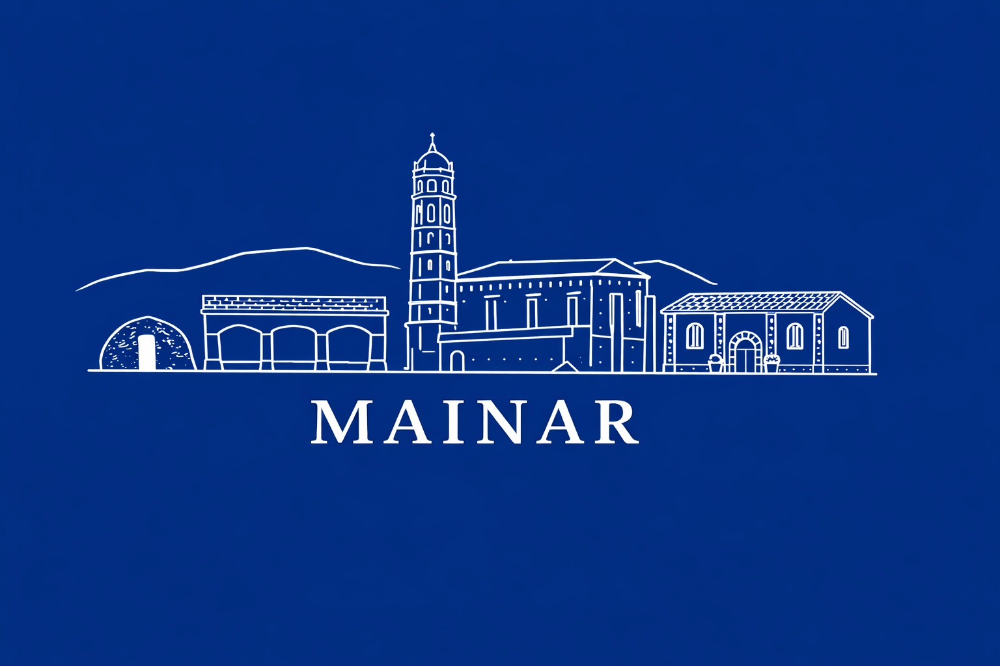

Fiestas de Mainar 2026
¡Vecinos y vecinas de Mainar! ¡Foráneos que venís a visitarnos!
¡¡¡¡Vamos calentando motores!!!!
¡Por fin han llegado nuestras fiestas! Días para llenar las calles de alegría, música, risas y buen ambiente. Días para reencontrarnos, compartir momentos inolvidables y demostrar, una vez más, que cuando Mainar se une… ¡no hay quien nos pare!
Queremos ver la plaza llena, a los niños disfrutando, a los mayores participando y a todo Mainar unido haciendo de estas fiestas algo inolvidable. Da igual la edad y procedencia: aquí hay sitio para todos, para bailar, cantar, reír, emocionarse y compartir juntos lo mejor de nuestro pueblo.
Os animamos a participar en cada acto, en cada comida popular, en las verbenas, concursos, juegos y tradiciones. Porque las fiestas no se ven… ¡las fiestas se viven! Y Mainar sabe muy bien cómo hacerlo.
También queremos agradecer de todo corazón a todas las personas, asociaciones, colaboradores y entidades que han ayudado de forma totalmente desinteresada para que todo esto salga adelante. Gracias por vuestro esfuerzo, vuestro tiempo y vuestras ganas de hacer pueblo. Sin vosotros, estas fiestas no serían posibles.
Ahora sí… ¡que empiece la fiesta!
¡VIVA MAINAR!
¡¡¡¡VIVA SAN ROQUE!!!!
¡¡¡VIVA NTRA. SRA. ASUNCION!!!
¡¡¡VIVA NUESTRAS GENTES Y NUESTRAS RAICES!!!!
ESTA COMISION OS DESEA FELICES FIESTAS 2026